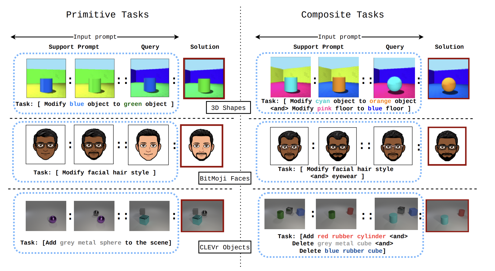
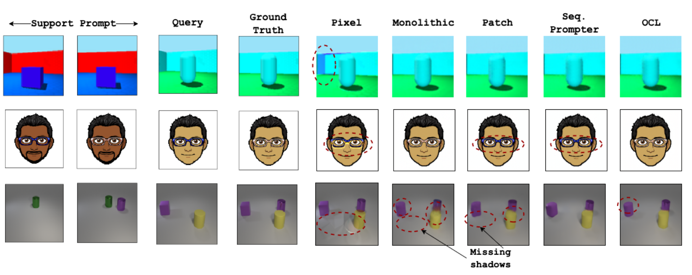
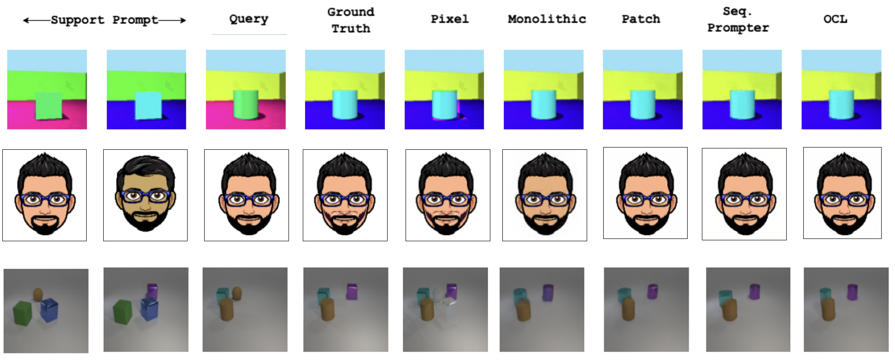
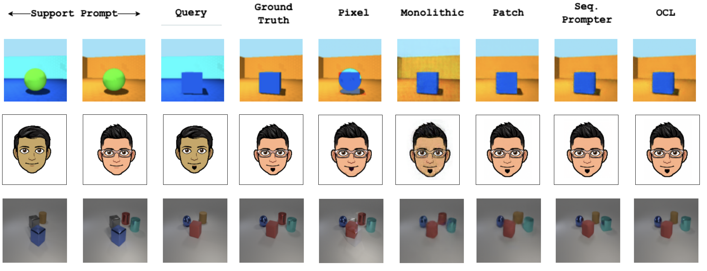
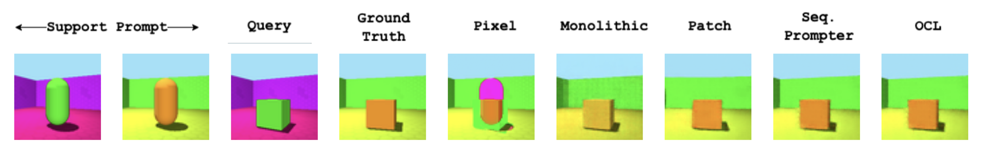

Im-Promptu: In-Context Composition from Image Prompts 
Summary
We introduce Im-Promptu, a method for solving visual analogies via in-context learning. Under the hood, we formalize an isomorphism between learning to abstract out tasks from composable elements of natural language tokens in language models and learning to implicitly infer composition rules from elements of visual scenes. Our experiments show that tokenizing visual input appropriately is a critical step in visual in-context learning. Having being trained on primitive tasks of a visual analogy benchmark, our object-centric learners learn to generalize to more complex contexts.
Benchmarks
Composable Image spaces provide a semantically rich, simple, and scalable avenue for setting up visual-analogy tasks. To this end, we use three popular visual spaces ([1], [2], [3]) to systematically measure the generalization properties of in-context learners. Each benchmark is comprised of training tasks where a single image attribute is varied at a time. Then at test time the agents are evaluated on their ability to generalize to multi-hop contexts.
Primitive and composite tasks over the three benchmarks
Architecture
Language based in-context learners are parametrized by two crucial components: (1) a tokenizer that chunks natural language into composable tokens and (2) a transformer that attends to the context tokens to solve the user specified task. We transport these mechanisms into the visual domain. More concretely, we model visual tokenizers across the compositional continuum, from a simple monolithic vector to object-centric slots. Then for an analogy A:B::C:D, a cross-attention transformer attends to the context tokens A, B, and C and predicts D.
A cross-attention transformer attends to the context tokens to solve visual analogies

Primitive Task Extrapolation
In the first set of experiments, the ability to extend learned composition rules to novel domain pairs is tested. For example, if the agent was trained to modify object color from blue to green, this extrapolation regime tests whether it can subsequently modify an orange object to a red one from context examples. Our experiments showed that learned vector representations afford simple and agile analogy solving for primitive extrapolation. However, as the complexity of the visual space increases, the vector representations fail to capture semantic consistency and visual quality deteriorates.
Primitive analogy extrapolation tasks
Composite Task Extrapolation
Here we present our agents with multi-hop contexts where more than one composable attribute is changed at a time. Effect of object-centric biases is strong and object tokens reliably produce high fidelity analogy completions.
Two hop contexts
Three hop contexts
Four hop contexts
Novel Programming Interface: Prompt Engineering with Im-Promptu
While natural-language provides an intuitive interface for tasks that have a fundamental degree of language abstraction (writing code, summarization, symbolic manipulation, etc.), it is not a priori straightforward that textual descriptions should entirely scaffold image generators. Coming up with natural-language prompts for complex visual entities is often tedious and unintuitive. Im-Promptu provides a new image generation avenue by engineering appropriate image-prompts for a visual-analogy to generate a desired output.
Creating a scene using textual descriptions is tedious and Text-to-Image models don't understand object relations. On the other hand one can use existing visual assets to setup an analogy with Im-Promptu